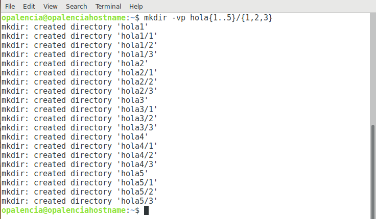

Crear carpetas > mkdir¶
Nombre del comando: mkdir
Man page online: https://linux.die.net/man/1/mkdir
Descripción: Crear carpetas o directorios, siempre y cuando no existan.
Man page local: $ man mkdir o $ man mkdir > mkdir.txt
Instalado por defecto: Sí, al menos en Debian.
Algunas Opciones:
-v, --verbose Explique qué se está haciendo.
-p, --parents Si no hay errores, cree directorios para padres según sea necesario
--version Muestra la versión de la herramienta mkdir.
Ejemplo 1: $ mkdir -v hola, lo más básico es crear un directorio, en el ejemplo se creará un nuevo folder llamado “hola”.
Ejemplo 2: $ mkdir -vp hola{1..5}/{1,2,3}, en este ejemplo se crean varias carpetas a la vez. Se crearán 5 carpetas (hola1,hola2,hola3,hola4 y hola5) padres y 3 carpetas (1,2,3) hijas en cada uno de ellas.